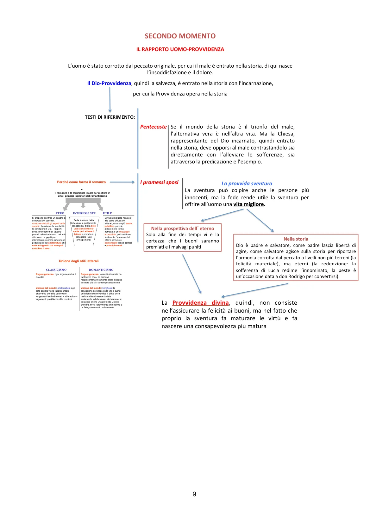

Secondo momento: la Provvidenza che opera nella storia
Dalla Pentecoste ai Promessi sposi: la salvezza non viene solo alla fine, ma lavora dentro il tempo e attraverso la sventura.
Secondo momento: la Provvidenza nella storia
Con l’ultimo inno sacro, la Pentecoste, la fede di Manzoni matura ulteriormente. Il male resta presente nella vita umana, ma la Provvidenza non è più soltanto sul confine della morte: Dio è presente in ogni momento e agisce nella storia.
La Chiesa, rappresentante del Dio incarnato, deve contrastare il male sia con l’alleviare concretamente le sofferenze, sia attraverso la predicazione e l’esempio. Questa prospettiva trova nei Promessi sposi la sua forma più piena.

Schema del secondo momento: Pentecoste, provvida sventura, prospettiva eterna e azione nella storia.
La provvida sventura
Nei Promessi sposi Dio agisce proprio quando il male sembra prevalere. La Provvidenza non consiste nel garantire felicità ai buoni. Questo sarebbe un moralismo infantile. Consiste piuttosto nel fatto che la sventura può diventare occasione di maturazione, conversione, purificazione o consapevolezza.
Lucia, fra Cristoforo, l’Innominato e persino don Rodrigo entrano tutti, in modi diversi, dentro questa logica: il dolore non viene negato, ma può essere trasformato.
Perché il romanzo
Il romanzo è, per Manzoni, la forma ideale per attuare i principi romantici della nuova letteratura:
vero: ricostruisce una società passata nei suoi aspetti concreti, non nel mito;
interessante: coinvolge un pubblico ampio grazie alla forma narrativa;
utile: comunica principi morali e politici con efficacia pedagogica.
Unione degli stili
Contro la rigida separazione classica tra stile alto per argomenti nobili e stile basso per argomenti quotidiani, Manzoni sceglie una rappresentazione più larga del reale. Se la realtà è composta da elementi molteplici, la letteratura deve saper usare registri diversi e trattare seriamente anche l’umile.
Qui entra anche la visione cristiana: il soggetto più sublime può essere un uomo umile, non un eroe mitologico.